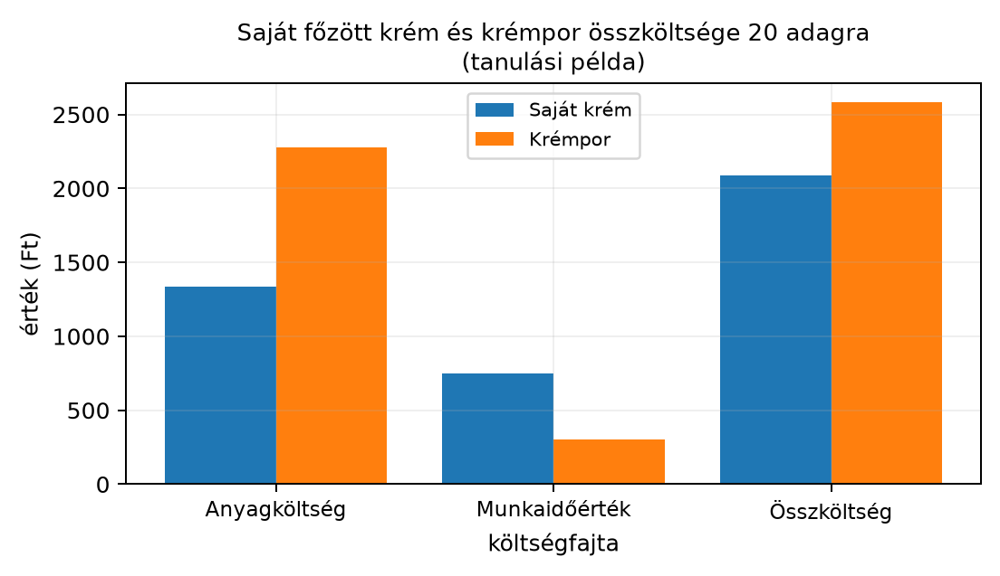

Egy cukrászüzemben a reggeli műszakban gyakran egyszerre kell előkészíteni a tortalapokat, krémeket, fagylaltot és a vitrinben lévő desszertek pótlását. Ha kevés a dolgozó, de a minőségnek is egyenletesnek kell lennie, a cukrász úgy dönthet, hogy bizonyos félkész termékeket kényelmi anyagból készít. A krémporból percek alatt csomómentes krém lesz, a fagylaltalapból előre beállított összetételű keverék, a tortazseléből fényes gyümölcsréteg. A kérdés azonban mindig ugyanaz: mit ad cserébe a kényelmi anyag, és mikor éri meg jobban a saját előállítás? Ebben az alfejezetben megtanulod, hogyan olvass le egy cukrászati kényelmi anyag adatlapját, hogyan számold át az adagolást, és hogyan hasonlítsd össze a kényelmi anyagot a saját gyártással.
Képzelj el egy polcot a cukrászüzemi szárazáru-raktárban. Egymás mellett porok, paszták, zselés alapok sorakoznak: vaníliás krémpor, kakaós pudingpor, habfixáló, tükörbevonó-por, egyszer használatos fagylaltalap, marcipán- és pisztáciapaszta. Minden dobozra az van írva: „készítsd el gyorsan, vízzel vagy tejjel”. A gyakorlott cukrász nem azt kérdezi, hogy „mit tud ez a termék?”, hanem azt, hogy „mi van benne, milyen allergént tartalmaz, mennyibe kerül adagonként, és valóban ugyanazt az ízt adja-e, mint a saját recept?”. Egy gyors fejszámolás is segít: ha a saját krém anyagköltsége kb. 1340 Ft 20 adagra, de 25 perc munka kell hozzá, a krémpor anyagköltsége kb. 2280 Ft, viszont csak 10 perc, a döntés nem automatikus. Ezt a példát a kalkulációban ki is számoljuk (tanulási árakkal).
Definíció. A cukrászati kényelmi anyag olyan élelmiszeripari félkész vagy előkészített készítmény, amelyet a cukrászüzemben egyszerű műveletekkel – általában víz, tej vagy tejszín hozzáadásával, melegítéssel, habosítással vagy hűtéssel – lehet felhasználni. A kényelmi anyag helyettesíti a nyersanyagokból önállóan elkészítendő félkész termék egészét vagy egy részét. Nem tartoznak ide az egyszerű nyersanyagok, például a cukor, a liszt vagy a vaj.
A kényelmi anyagokat többféleképpen csoportosíthatjuk. Gyakorlati szempontból a legfontosabb a felhasználási terület szerinti csoportosítás.
| Csoport | Jellemző felhasználás | Tipikus összetevők | Megjegyzés |
|---|---|---|---|
| Krémpor, pudingpor | főzött vagy hidegen elkevert krémek, töltelékek | keményítő, cukor, tejpor vagy tejsavó, aromák, zselésítő, színezék | elkészítés módja a csomagoláson van feltüntetve |
| Habfixáló, habalap | tejszínhab, növényi hab stabilizálása | cukor, módosított keményítő, zselatin vagy más zselésítő, emulgeálószer | adagolás általában a hab tömegére százalékban |
| Tortazselé, tükörbevonó-por | süteményeken fényes zseléréteg vagy bevonat | cukor, zselésítő, sav, gyümölcs- vagy ízanyag, színezék | melegíteni kell, majd melegen vagy langyosan felvinni |
| Fagylaltalap (base) | fagylalt- vagy parfékeverék alapja | cukor, glükóz, tejpor, tejzsír vagy növényi zsír, stabilizátor, emulgeálószer | vízzel vagy tejjel kikeverve, érlelés után fagyasztható |
| Ízpaszták, pürék | aromázás, színezés, gyümölcsös íz beállítása | gyümölcs, cukor, gyümölcslé-koncentrátum, sav, aroma, sűrítőanyag | koncentráltak, többnyire kis mennyiségben adagolják |
| Bevonó- és ganache-alapok | csokoládés bevonatok, ganache-krémek | kakaómassza, kakaóvaj, cukor, tejpor, emulgeálószer, aroma | nem tévesztendő össze a valódi csokoládéval, ha az jelölés szerint nem csokoládé |
Minden kényelmi anyagot gyártói adatlappal együtt kell beszerezni, vagy legalább a csomagoláson lévő jelölést kell pontosan ismerni. A cukrászüzemben az adatlapot a nyersanyag-nyilvántartás részeként célszerű megőrizni, hogy a hatósági ellenőrzéskor és az allergénkezelés során is bizonyítható legyen az összetétel.
Példa. Egy vaníliás krémpor fiktív, oktatási adatlapja.
| Mező | Tartalom |
|---|---|
| Megnevezés | hidegen kikeverhető vaníliás krémpor |
| Összetevők | cukor, módosított burgonyakeményítő, tejpor, dextróz, zselésítő (karragén), aroma, színezék (béta-karotin) |
| Allergének | tejet tartalmaz |
| Adagolás | 100 g por + 300 ml hideg tej (2–5 °C), gépi habosítás 3–5 perc |
| Kihozatal | kb. 400 g krém |
| Tárolás | száraz helyen, legfeljebb 20–25 °C-on (gyártói adatlap szerint), felbontás után lezárva |
| Eltarthatóság | gyártói minőségmegőrzési idő szerint |
A fenti adatok tanulási példák, a valódi adagolást mindig a gyártó adatlapja határozza meg (ellenőrizendő: gyártói adatlap).
Jogszabály. A kényelmi anyag is élelmiszer, ezért a Magyarországon forgalomba hozott termékeken az összetevőket csökkenő sorrendben kell feltüntetni. A 14 jelölendő allergéncsoportot (lásd a Allergének és intoleranciák: tájékoztatás és allergénkezelés a cukrászüzemben alfejezetet) mindig ki kell emelni, az adalékanyagokat pedig a funkciójukkal és a hivatalos E-számmal vagy megnevezéssel kell jelölni. Az adalékanyagok engedélyezettségét az 1333/2008/EK rendelet, az aromák használatát az 1334/2008/EK rendelet, a fogyasztói tájékoztatást az 1169/2011/EU rendelet és a kapcsolódó magyar előírások tartalmazzák (ellenőrizendő: aktuális szövegek és a Magyar Élelmiszerkönyv vonatkozó részei).
A cukrász szempontjából az adatlap három sora a legkritikusabb: az allergének, az adagolás és a tárolás. Ha például egy vendég laktózérzékenységre hivatkozik, a tanulónak nem elég a krémporról tudni, hogy „tejpor van benne”; azt is tudnia kell, hogy a jelölésen a tej allergénként kiemelten szerepel-e, és hogy a késztermékben marad-e laktóztartalom.
A kényelmi anyag használata sok esetben ésszerű, de nem mindig. A döntéshez ismerni kell az előnyöket és a hátrányokat.
Előnyök:
Hátrányok:
Szabály. A cukrász akkor választhat kényelmi anyagot, ha a termék minősége a vendég számára elfogadható, az allergén és adalékanyag-jelölés a készterméken is megvalósítható, és a gazdaságossági számítás a teljes költségre (anyag, munkaidő, energia, eszközhasználat) számolva is indokolja. Hagyományőrző terméknél a kényelmi anyag helyettesítése csak akkor fogadható el, ha a termék megnevezése és tájékoztatása nem azt sugallja, hogy a hagyományos technológiával készült (ellenőrizendő: fogyasztói tájékoztatási gyakorlat).
Adott. Egy krémpor adatlapja szerint 100 g porhoz
300 ml hideg tej kell, a kihozatal pedig 400 g krém. Mennyi port és
tejet mérjünk ki 12 adaghoz, ha egy adag 80 g krém?
Keresett.
,
.
Képlet. A kihozatal alapján 400 g krém 5 adagra elég,
mert
adag.
Behelyettesítés.
Eredmény. 240 g por és 720 ml hideg tej
szükséges.
Ellenőrzés.
tömeg, amelyből 12 adag 960 g + kis tömegveszteség lehet; a konyhai
gyakorlatban a tej sűrűségét 1 g/ml-nek véve 960 g-ot kapunk, a többlet
a mérési pontosságból adódik.
Helyzet. Egy cukrász 20 adag vaníliakrémet készít. Két lehetősége van: saját főzött sárgakrém vagy hidegen kikeverhető krémpor.
Saját főzött krém (20 adag, kb. 1670 g kész krém, adagonként kb. 80–85 g):
| Nyersanyag | Mennyiség (g) | Megjegyzés |
|---|---|---|
| Tej | 1200 | 3,5 %-os |
| Cukor | 240 | kristálycukor |
| Tojássárgája | 160 | pasztőrözött tojássárgája |
| Étkezési keményítő | 80 | vaníliás |
| Vaj | 80 | hideg, darabolt |
| Vanília | 1 | paszta vagy kikapart rúd |
| Összesen | 1761 | a főzési veszteség (kb. 5%) után kb. 1670 g kész krém () |
Krémpor (20 adag, 80 g/adag = 1600 g): a gyártó szerint 400 g krém kihozatalához 100 g por és 300 ml tej kell. 1600 g-hoz négyszeres mennyiség: 400 g por és 1200 ml tej.
Lépések.
1. Számítsuk ki a saját krém anyagköltségét. Tanulási árakkal számolva:
tej 300 Ft/l, cukor 250 Ft/kg, tojássárgája 3000 Ft/kg (10 tojássárgája
kb. 160 g; tanulási ár, ellenőrizendő: aktuális ár), keményítő 600
Ft/kg, vaj 3000 Ft/kg, vanília 150 Ft.
2. Anyagköltség saját krémre:
Kiszámolva:
.
3. Krémpor anyagköltsége: 400 g por, a gyártói ár 1200 Ft/250 g, azaz
+ 1200 ml tej 360 Ft =
.
A krémporból 1600 g krém lesz (20 × 80 g), a saját krémből kb. 1670 g;
az egyszerűség kedvéért hasonlítsuk össze 100 g kész krém
költségét.
- Saját krém:
.
- Krémporos krém:
.
Krémporral tehát az anyagköltség itt kb. 1,8-szoros.
4. Számítsuk be a munkaidőt is. A saját főzés 25 perc, a krémpor
összeállítása 10 perc. A munkaidő tanulási ára 1800 Ft/óra
(ellenőrizendő: aktuális bérköltség).
- Saját krém munkaidőértéke:
.
- Krémpor munkaidőértéke:
.
5. Összköltség 20 adagra:
- Saját:
.
- Krémpor:
.
A saját krém ebben a tanulási példában akkor is olcsóbb, ha a munkaidőt
is felszámítjuk. A krémpor akkor lehet indokolt, ha a munkaerő nem
elérhető, vagy az egyenletes minőség azonnali garantálása a döntő.

A diagramról leolvasható, hogy a krémpor anyagköltsége magas, de a munkaidő-érték kisebb. A döntés tehát nem egyszerűen „jó vagy rossz”, hanem a teljes költség és a minőségi elvárás függvénye.
Továbbvitt eredmény. A fagylaltalap (base) összetételét és adagolását a Fagylaltkeverék-számítás: szárazanyag, cukor, zsír, édesség és fagyáspont alfejezetben fogjuk behelyettesíteni, ezért a kényelmi anyagok adatlapján szereplő cukor-, zsír- és szárazanyag-tartalmat meg kell tanulnunk értelmezni. A krémporos példa logikáját a Krémes és tejszínes sütemények anyaghányad-számítása és higiéniája is felhasználja, amikor saját krém és ipari félkész összevetését kéri.
Számítás. A fagylaltalap adatlapja szerint 1 kg kész
fagylaltkeverékhez 300 g alapport és 700 ml vizet kell használni, az
alap por cukortartalma 28 g/100 g, összes szárazanyag-tartalma 95 g/100
g. Mennyi cukor jut 1 kg kész keverékbe?
Megoldás. 300 g porban a cukor:
.
A kész keverék tömege
,
így a kész keverék cukortartalma
.
Ez a későbbi fagylaltkeverék-számítás egyik bemenő értéke lehet.
A kényelmi anyagból készült terméknél ugyanazokat az érzékszervi, tömeg- és állagvizsgálatokat kell elvégezni, mint a saját alapú terméknél.
| Hiba tünete | Ok | Megelőzés/javítás |
|---|---|---|
| A krém csomós, a por nem oszlik el | a port túl gyorsan, forró folyadékba öntötték, vagy nem keverték folyamatosan | a gyártói előírást követve hideg tejet használjunk, a port folyamatos keverés közben szórjuk a folyadékba |
| A tortazselé nem dermed meg | túl kevés port vagy túl sok folyadékot használtak, a pH vagy a hőmérséklet nem megfelelő | pontosan mérjünk, és a zselésítőt a gyártói adagolás szerint oldjuk fel, majd a megadott hőfokra hűtsük |
| A késztermék allergén jelölése hiányos | nem ellenőrizték a kényelmi anyag adatlapját, például a krémpor tejport tartalmaz | minden beszállított kényelmi anyag adatlapját tartsuk elérhető helyen, és az allergéneket vezessük át a késztermék tájékoztatójába |
| A felbontott por összeáll, vagy a paszta penészes lesz | nem zárták vissza, nedves helyen tárolták | felbontás után jól zárva, száraz, hűvös helyen tároljuk, és a gyártói eltarthatóságot tartsuk be |
Egy esküvői tortarendelésnél a cukrász a hagyományos vaníliás vajkrém helyett időhiány miatt hidegen keverhető krémport használna. A rendelésnél a pár jelezte, hogy az egyik vendég laktózérzékeny, ezért a torta szeleteinek egy része laktózmentes legyen. A cukrász előveszi a krémpor gyártói adatlapját, és látja, hogy az összetevők között tejpor szerepel, az allergénsorban a tej ki van emelve. A csomagoláson nincs „laktózmentes” jelölés. A cukrász ezért a laktózmentes szeletekhez nem használja a krémport, hanem laktózmentes tejszínből vagy növényi habból készíti a krémet. Az eset tanulsága: a kényelmi anyag gyorsasága soha nem írhatja felül az allergén- és jelölési kötelezettséget. A gyártói adatlap itt nem felesleges papír, hanem a vendég egészségét védő dokumentum.
1. feladat (A)
Add meg a cukrászati kényelmi anyag fogalmát, és sorolj fel legalább öt
csoportot egy-egy példával.
2. feladat (A)
Egy habfixáló adatlapja szerint 1 kg habhoz 20 g habfixálót kell adni.
a) Mennyi habfixáló kell 2,5 kg habhoz? b) Mennyi habfixálót mérjünk, ha
a 2,5 kg kész habhoz 10%-os kezelési (az edényben, zsákban maradó)
veszteséggel kell számolni?
3. feladat (B)
Egy cukrász 30 adag fagylaltkeveréket készít fagylaltalapból. Az adatlap
szerint 1 kg kész keverékhez 280 g alap és 720 ml víz szükséges. Mennyi
alap és víz kell 30 adaghoz, ha egy adag 120 g kész keverék? Az alap por
cukortartalma 30 g/100 g. Mennyi lesz a kész keverék cukortartalma
tömegszázalékban?
4. feladat (B)
Hasonlítsd össze a saját főzött csokoládékrém és a kényelmi
csokoládékrémpor anyagköltségét 20 adagra a következő tanulási
adatokkal: saját krémhez 800 ml tej (300 Ft/l), 120 g csokoládé (6000
Ft/kg), 60 g cukor (250 Ft/kg), 40 g keményítő (600 Ft/kg), 2
tojássárgája (80 g, 3000 Ft/kg). A krémpor adagolása: 100 g por + 300 ml
tej = 400 g krém; a por ára 1800 Ft/250 g. Számítsd ki a 100 g kész
krémre jutó anyagköltséget mindkét változatra.
5. feladat (C)
Egy krémpor összetevőin ez áll: cukor, keményítő, tejsavó, étkezési
zselatin, aroma, színezék. A terméken szerepel, hogy a felhasználás
előtt forró vizet kell hozzáadni. Milyen minőségi és
élelmiszerbiztonsági szempontokat mérlegelj, mielőtt vegetáriánus
vendégnek szánt süteménybe teszed a krémet? Mit kell megnézni a
jelölésen?
6. feladat (D)
Keress otthon vagy a tanműhelyben egy cukrászati kényelmi anyagot
(például krémport, pudingport, tortazselét vagy ízpasztát). Olvasd le a
csomagoláson az összetevőket, az allergéneket, az adagolást és a
tárolási utasítást. Készíts belőle a gyártói leírás szerint egy kis
adagot, töltsd ki a technológiai lapot, és értékeld a kész terméket a
minőségellenőrzési szempontok szerint.
Önellenőrzés – válaszok
1. feladat megoldása
A definíciót a fenti Definíció szakasz tartalmazza. Öt
csoport például: krémpor (vaníliás), pudingpor (csokoládés), habfixáló
(tejszínstabilizátor), tortazselé (gyümölcsös bevonó), fagylaltalap
(base).
2. feladat megoldása
a)
.
3. feladat megoldása
30 adag tömeg:
.
Az alappor:
.
Víz:
.
Az alappor cukortartalmát korrigáljuk:
cukor. A kész keverék cukortartalma:
.
4. feladat megoldása
Saját csokoládékrém: anyagköltség =
.
A kész krém tömegét közelítsük 1000 g-ra (tej tömegéből adódóan a
veszteség után). A 100 g-ra jutó költség:
.
Krémpor: 100 g por + 300 ml tej = 400 g krém. 100 g kész krémhez 25 g
por szükséges, mert
.
A por ára:
,
így 25 g por 180 Ft. A tej: 75 ml =
.
Összesen:
.
A saját krém ebben a példában tehát anyagköltségben kb. 40%-kal olcsóbb
a kényelmi krémporos változatnál (123,9 és 202,5 Ft/100 g).
5. feladat megoldása
A jelölésen szerepel étkezési zselatin, amely állati eredetű; ezt
vegetáriánus vendég esetén kerülni kell. Ellenőrizni kell, hogy a termék
jelölése szerint megfelelő-e a felhasználás; vegetáriánus termékhez
növényi zselésítőt (agar, pektin) tartalmazó kényelmi anyagot kell
keresni. A forró vizes előállítás nem jelenti automatikusan a zselatin
állati eredetének megváltozását. A csomagoláson a „zselatin”
megnevezésnek szerepelnie kell; a vegetáriánus védjegy hiányát is
figyelembe kell venni.
6. feladat megoldása
A gyakorlati feladathoz nincs egyetlen helyes megoldás. Értékelési
szempont: a leírt összetevők és allergének pontos kigyűjtése; az
adagolás mérése; a műveleti sorrend betartása; a kész termék érzékszervi
értékelése (csomómentesség, állag, íz); a technológiai lap kitöltése,
különösen az allergénsor; a dokumentálás.
A cukrászati kényelmi anyag ipari félkész vagy előkészített készítmény, például krémpor, pudingpor, habfixáló, tortazselé, fagylaltalap vagy ízpaszta. Előnye az egyenletes minőség és a gyors felhasználhatóság; hátránya a magasabb anyagköltség, a több adalékanyag és az ízbeli rugalmasság csökkenése. A kényelmi anyag adatlapjából mindig ki kell olvasni az összetevőket, a kiemelt allergéneket, az adagolást és a tárolást. A felhasználásnál a gyártói utasítást kell követni, és a késztermék jelölésén is át kell vezetni az allergéntartalmat. Számításkor az adagot a kihozatali aránnyal számoljuk: például 100 g por + 300 ml tej = 400 g krém. A gazdaságossági döntéshez az anyagköltség mellett a munkaidő-értéket is be kell számítani. Továbbvitt eredmény: a fagylaltalap összetételét és cukortartalmát a Fagylaltkeverék-számítás: szárazanyag, cukor, zsír, édesség és fagyáspont alfejezetben fogjuk felhasználni; a krémporos összehasonlítás a Krémes és tejszínes sütemények anyaghányad-számítása és higiéniája kalkulációjában tér vissza. Munkavégzés közben a higiéniai munkakezdés és az allergén-keresztszennyezés megelőzése kötelező.